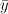

This utility performs computations that fit a non-linear mathematical regression model to two variables. To use this utility, you must provide the values for an independent/predictor variable and a dependent/response variable in separate columns.
The following types of non-linear models are available:
where y is the independent variable and x is the dependent variable.
The non-linear regression problem is solved using least squares estimation. The problem is expressed as an inconsistent system, Ax = b, where x contains regression coefficients, b contains values of the dependent variables, and A contains values computed using the independent variables such that the chosen non-linear model is represented equivalently by the inconsistent system.
For variation, the following values are computed (  is the mean of the y variable values, n is the sample size, and k is the number of regression coefficients):